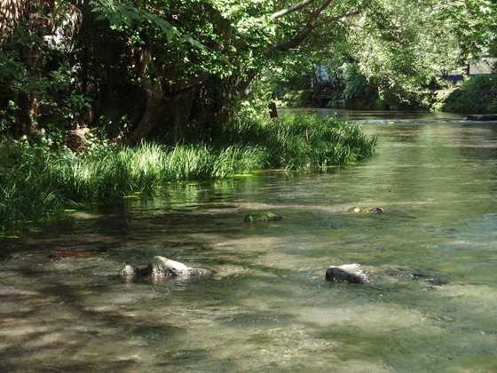
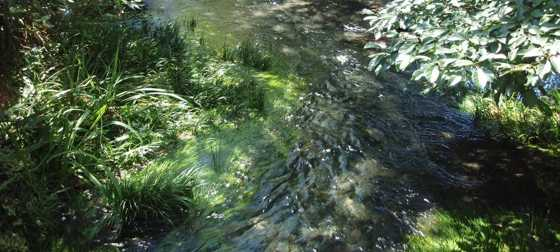
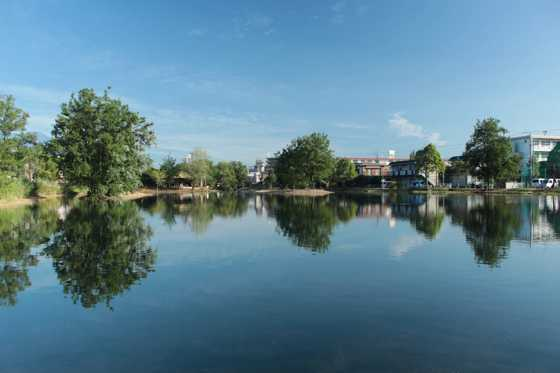
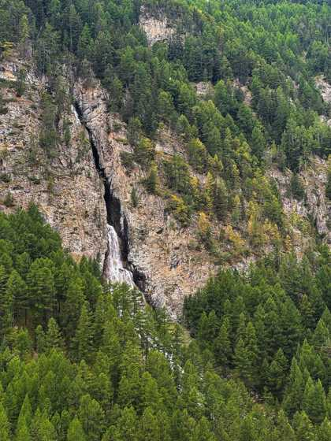
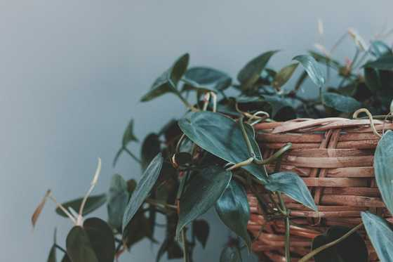
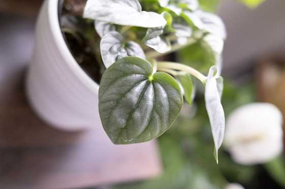

メニュー
地元の素材をいかした、手作りの品が紹介されています。営業時間・価格・詳細は準備中です。


そのほか、西伊豆産のテングサを使った「クリーム小豆寒天」と「ココナッツジャワカレー」が紹介されています(写真は準備中)。
営業時間・定休日・席数: 準備中 / 夜は予約制と紹介されています(詳細は準備中)
修善寺温泉の入口で、大地の恵みをいただく
大地(GAIA)の恵みを一杯の珈琲に。伊豆の旅の入口にある、小さな案内所のようなカフェ。
地元の素材をいかした、手作りの品が紹介されています。営業時間・価格・詳細は準備中です。
そのほか、西伊豆産のテングサを使った「クリーム小豆寒天」と「ココナッツジャワカレー」が紹介されています(写真は準備中)。
営業時間・定休日・席数: 準備中 / 夜は予約制と紹介されています(詳細は準備中)
ジオカフェGAIAは、修善寺温泉バス停の近くにある小さなカフェです。「安心安全な生活クラブや地産地消を心がけ手作りしている」と紹介されています。
店内では、伊豆半島のジオエリアや修善寺観光のことを気軽に尋ねることができる、とされています。

写真: Batholith / パブリックドメイン

写真: Batholith / パブリックドメイン

写真: Batholith / パブリックドメイン

写真: ThomasInTheSky / CC0

写真: Beanbeans424 / CC0

写真: Greg Weaver / CC0

写真: Plantmomcare / CC BY-SA 4.0

写真: Poliphilo / CC0
以下は制作側が作成したイメージ例であり、実際のお客様の声ではありません。
温泉街を歩く前に立ち寄りました。珈琲をいただきながら、おすすめの散策のしかたを教えてもらえたのが嬉しかったです。
小さな店内に落ち着いた空気が流れていて、旅の合間にほっとできました。次は寒天も食べてみたいです。
地元の素材を大事にしている雰囲気が伝わってきました。バス停の近くで、旅の始まりに寄りやすい場所です。
〒410-2416 静岡県伊豆市修善寺818-1
電話: 準備中 / 営業時間・定休日: 準備中
掲載している写真はフリー素材のイメージで、店舗の実際の様子ではありません。他地域・国外で撮影されたものを含みます。縮小・切り抜きなどの加工をしています。